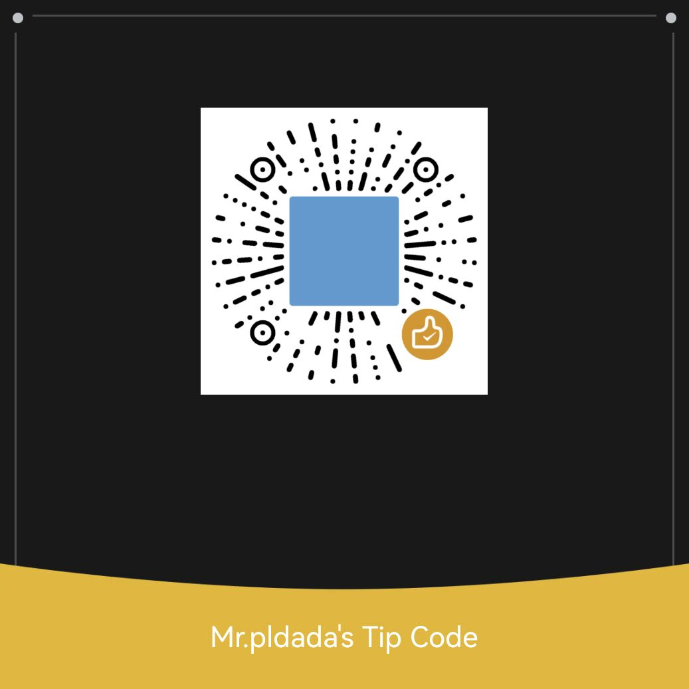

<div class="blog-slider">
  <div class="blog-slider__wrp swiper-wrapper" style="margin-top: 25px;">
    <div class="blog-slider__item swiper-slide">
      <div class="blog-slider__img">
        
        
      </div>
      <div class="blog-slider__content">
        <span class="blog-slider__code"></span>
        <div class="blog-slider__title">谢谢您为这个游戏捐赠</div>
        <div class="blog-slider__text">感谢您游玩本游戏，如果您觉得这个游戏好玩的话，可以扫描左侧二维码为作者加油，还可以加快游戏更新速度，谢谢您的大力支持！ </div>
      </div>
    </div>
    
  </div>
  <div class="blog-slider__pagination"></div>
</div>

<style>
* {
  box-sizing: border-box;
}

body {
  background-color: #FFE53B;
  background-image: linear-gradient(131deg, #ffffff 25%, #FFE53B 74%);
  min-height: 100vh;
  font-family: "Fira Sans", sans-serif;
  display: flex;
}

.blog-slider {
  width: 95%;
  position: relative;
  max-width: 800px;
  margin: auto;
  background: #fff;
  box-shadow: 0px 14px 80px rgba(34, 35, 58, 0.2);
  padding: 25px;
  border-radius: 25px;
  height: 400px;
  transition: all 0.3s;
}
@media screen and (max-width: 992px) {
  .blog-slider {
    max-width: 680px;
    height: 400px;
  }
}
@media screen and (max-width: 768px) {
  .blog-slider {
    min-height: 500px;
    height: auto;
    margin: 180px auto;
  }
}
@media screen and (max-height: 500px) and (min-width: 992px) {
  .blog-slider {
    height: 350px;
  }
}
.blog-slider__item {
  display: flex;
  align-items: center;
}
@media screen and (max-width: 768px) {
  .blog-slider__item {
    flex-direction: column;
  }
}
.blog-slider__img {
  width: 300px;
  flex-shrink: 0;
  height: 300px;
  background-image: linear-gradient(147deg, #fe8a39 0%, #fd3838 74%);
  box-shadow: 4px 13px 30px 1px rgb(252 240 56 / 20%);
  border-radius: 20px;
  transform: translateX(-80px);
  overflow: hidden;
}
.blog-slider__img img {
  width: 100%;
  height: 100%;
  object-fit: cover;
  display: block;
  border-radius: 20px;
  transition: all 0.3s;
}
@media screen and (max-width: 768px) {
  .blog-slider__img {
    transform: translateY(-50%);
    width: 90%;
  }
}
@media screen and (max-width: 576px) {
  .blog-slider__img {
    width: 95%;
  }
}
@media screen and (max-height: 500px) and (min-width: 992px) {
  .blog-slider__img {
    height: 270px;
  }
}
.blog-slider__content {
  padding-right: 25px;
}
@media screen and (max-width: 768px) {
  .blog-slider__content {
    margin-top: -80px;
    text-align: center;
    padding: 0 30px;
  }
}
@media screen and (max-width: 576px) {
  .blog-slider__content {
    padding: 0;
  }
}
.blog-slider__content > * {
  transform: translateY(25px);
  transition: all 0.4s;
}
.blog-slider__code {
  color: #7b7992;
  margin-bottom: 15px;
  display: block;
  font-weight: 500;
}
.blog-slider__title {
  font-size: 24px;
  font-weight: 700;
  color: #0d0925;
  margin-bottom: 20px;
}
.blog-slider__text {
  color: #4e4a67;
  margin-bottom: 30px;
  line-height: 1.5em;
}
.blog-slider__button {
  display: inline-flex;
  background-image: linear-gradient(147deg, #fe8a39 0%, #fd3838 74%);
  padding: 15px 35px;
  border-radius: 50px;
  color: #fff;
  box-shadow: 0px 14px 80px rgba(252, 56, 56, 0.4);
  text-decoration: none;
  font-weight: 500;
  justify-content: center;
  text-align: center;
  letter-spacing: 1px;
}
@media screen and (max-width: 576px) {
  .blog-slider__button {
    width: 100%;
  }
}
.blog-slider .swiper-container-horizontal > .swiper-pagination-bullets, .blog-slider .swiper-pagination-custom, .blog-slider .swiper-pagination-fraction {
  bottom: 10px;
  left: 0;
  width: 100%;
}
.blog-slider__pagination {
  position: absolute;
  z-index: 21;
  right: 20px;
  width: 11px !important;
  text-align: center;
  left: auto !important;
  top: 50%;
  bottom: auto !important;
  transform: translateY(-50%);
}
@media screen and (max-width: 768px) {
  .blog-slider__pagination {
    transform: translateX(-50%);
    left: 50% !important;
    top: 205px;
    width: 100% !important;
    display: flex;
    justify-content: center;
    align-items: center;
  }
}
.blog-slider__pagination.swiper-pagination-bullets .swiper-pagination-bullet {
  margin: 8px 0;
}
@media screen and (max-width: 768px) {
  .blog-slider__pagination.swiper-pagination-bullets .swiper-pagination-bullet {
    margin: 0 5px;
  }
}
.blog-slider__pagination .swiper-pagination-bullet {
  width: 11px;
  height: 11px;
  display: block;
  border-radius: 10px;
  background: #062744;
  opacity: 0.2;
  transition: all 0.3s;
}
.blog-slider__pagination .swiper-pagination-bullet-active {
  opacity: 1;
  background: #fd3838;
  height: 30px;
  box-shadow: 0px 0px 20px rgba(252, 56, 56, 0.3);
}
@media screen and (max-width: 768px) {
  .blog-slider__pagination .swiper-pagination-bullet-active {
    height: 11px;
    width: 30px;
  }
}
</style>